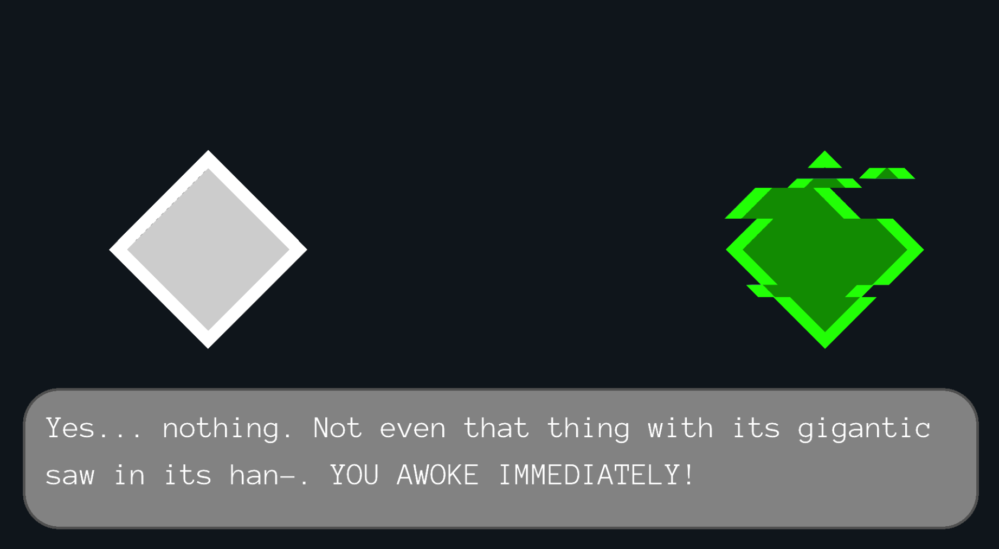
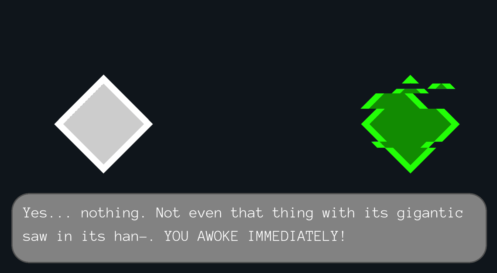

[INSERT NAME]
What is this prohect ?
This project is a redesign of our first Chicky Graphs game, which aims much further in the learning of computer science. To start this new project, we choose to collaborate with three Coventry students.
The objective of this game is to realize a game that will teach the user how to code. This is a story-based game and the user unlocks the different lessons as he progresses in the game.
How does it work ?
We choose to build a story game on data structures and other computer science related topics like variables, functions, the different major architectures, design patterns etc...
The user will have to retain the information. The game will thus make him practice his reasoning skills and programming knowledge. To do so, we are implementing an editor inside our application with puzzles that the user will have to solve. The user will be able to run his program, which will be checked.
If the user succeeds in completing the puzzle, he will continue the story with the next mission.
But why making a story out of it ?
We really think that making something involving helps in learning and retaining concepts. Making it really concrete and having tangible consequences to your actions helps remembering what you did.
Soon available !
Stay tuned ! Our new game is in progress an will soon be released...